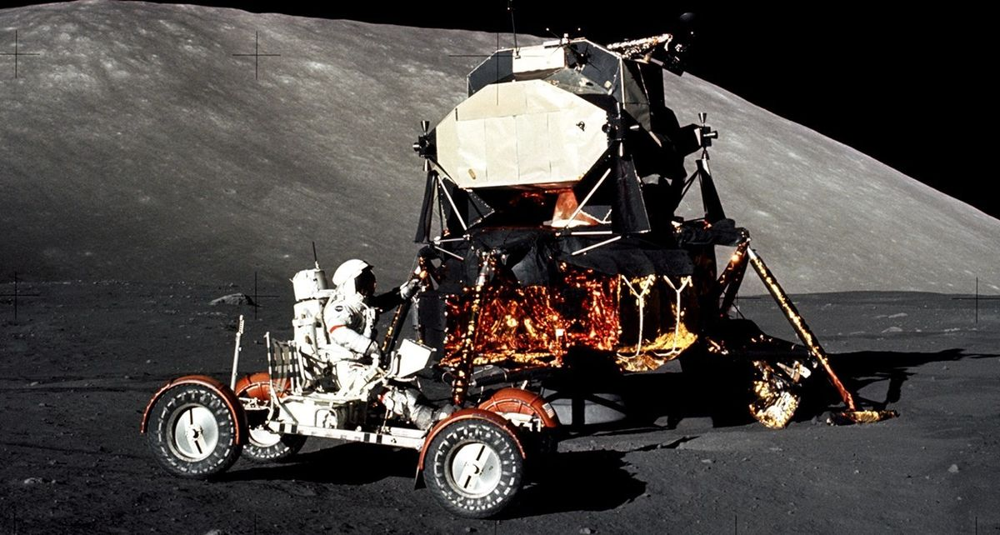
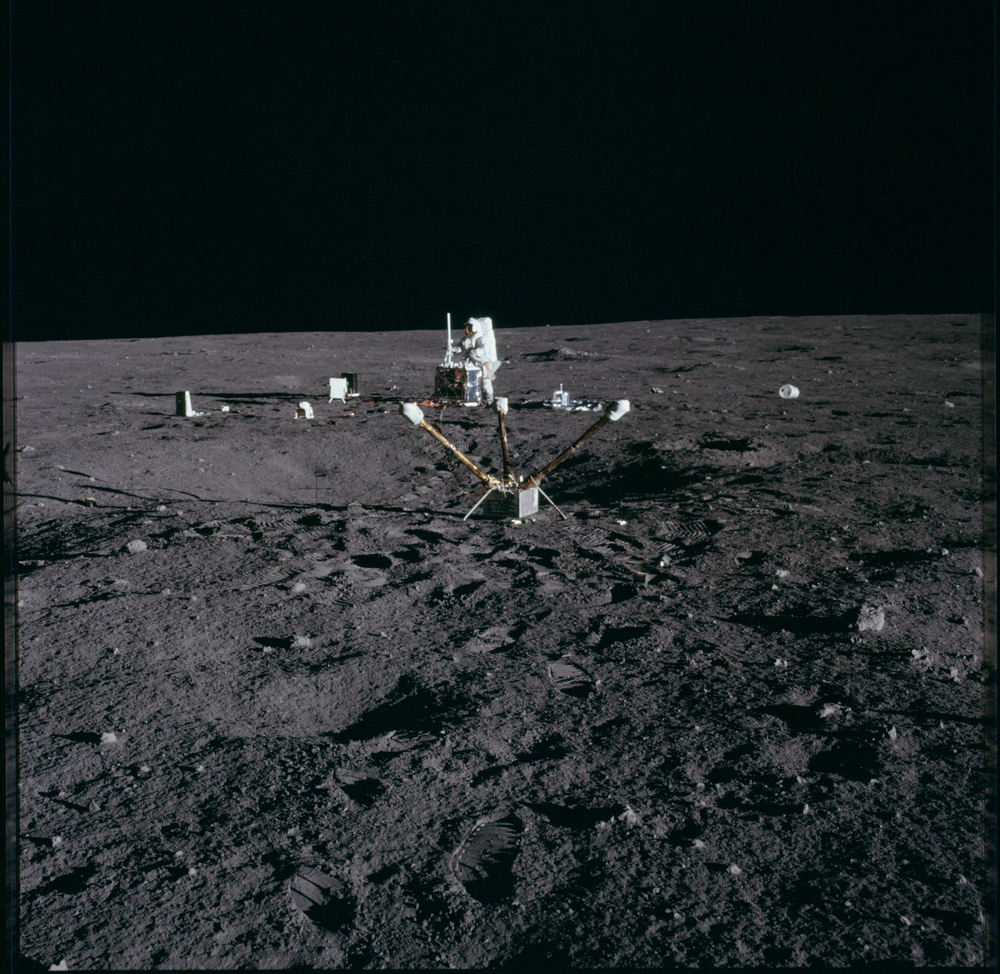

IN ORBIT
Inactive satellites, discarded rocket stages and fragments from collisions.
Example: Vanguard 1NASA SPACE APPS CHALLENGE / 2026
Their missions ended. Their discoveries live on.
Journey to the machines still resting on the Moon and Mars.
FIELD NOTES FROM OTHER WORLDS // 001
What happens to a machine after its last mission? Some become silent monuments. Others continue to shape science long after their operators go home.
SCROLL TO DISCOVER01 / THE LEGACY
Since 1958, NASA has sent spacecraft and scientific instruments into the unknown. Some never came back—and that was sometimes part of the plan.
Inactive satellites, Apollo vehicles, scientific stations, parachutes and landing hardware tell stories about the engineering breakthroughs that made exploration possible. But they also raise questions about planetary protection, safety and future reuse.
02 / WHERE WE LEFT THEM
Not everything left in space is the same. Some objects are hazardous debris. Others are important historical or scientific sites.
Inactive satellites, discarded rocket stages and fragments from collisions.
Example: Vanguard 1Apollo rovers, lander descent stages, tools and instruments left at landing sites.
Explore: LRV and ALSEPDiscarded parachutes, heat shields, backshells and descent stages lie near the previous rover landing areas.
Explore: Perseverance EDLSpacecraft and spent hardware traveling far from Earth, sometimes still sending data.
Not all are abandoned03 / THE BIG QUESTION
Spacecraft materials—and possible contamination from Earth—can complicate the study of other worlds.
Debris or discarded components could matter for landing-site planning and future missions.
Materials are difficult to recover when they are exposed to extreme temperatures, radiation and vast distances.
Not every object should be removed. Historical landing sites and instruments may deserve protection.
04 / THREE STORIES, THREE LEGACIES
Real equipment. Real scientific contributions. Select a mission to explore its story.

What was it? A lightweight, foldable four-wheeled electric vehicle.
Why was it needed? To carry astronauts, tools and lunar samples across distant geological sites.
What remains? The three rovers stayed at their landing sites after the astronauts returned to Earth.
FIELD ARCHIVE / ORIGINAL MISSION PHOTOGRAPHS
Explore NASA’s original mission photography and the extraordinary hardware left on other worlds.

02 / ALSEP EXPERIMENTS NASA PHOTO ↗ 03 / PERSEVERANCE BACKSHELL NASA PHOTO ↗
03 / PERSEVERANCE BACKSHELL NASA PHOTO ↗Photograph credits: NASA / NASA-JPL-Caltech. If an image is unavailable, click its NASA photo source to view or download the original.
05 / THE RECYCLING PROBLEM
Extreme temperatures, dust and radiation can damage equipment and make handling difficult.
Retrieval would require launch mass, landing systems, energy and transport capabilities.
Specialized alloys, electronics and composites are hard to separate or repurpose safely.
06 / WHAT COMES NEXT
Catalog known objects and their original missions. Use NASA imagery to document them, then decide what to preserve, monitor or investigate.
Imagine specialized robots that could examine equipment, test whether parts can be reused and selectively manage problematic debris.
Research local manufacturing and material recovery so future explorers can rely less on supplies launched from Earth.
These ideas are a proposed roadmap, not an announced NASA cleanup program.
07 / CHECK YOUR KNOWLEDGE
Three quick questions. Can you identify the forgotten machines—and why they matter?
END OF TRANSMISSION // THE STORY CONTINUES
Every machine tells a story of ambition, discovery and responsibility. The next generation gets to decide what we leave behind.
REVISIT THE MISSIONS ↗